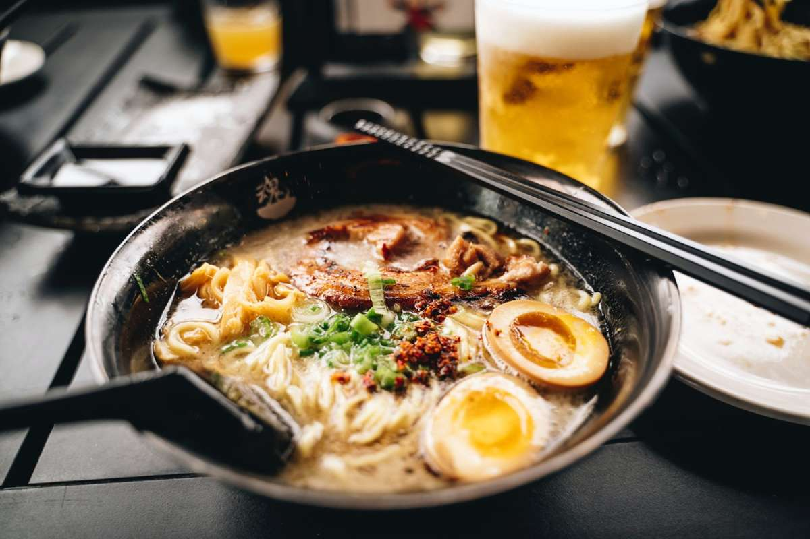

Ramen Recipe

How to make traditional japanese Ramen
Ingredients
- miso
- Sesame oil
- chicken broth
- white pepper
- Ramen noodles (fresh or dried)
- 200g pork
- 2 eggs
- 50g bean sprouts
- 1 green onion
How to make it
- bring 1L of chicken broth to simmer and add the miso, sesame oil and the white pepper
- next braise the pork in a different pan, and cook the 2 eggs softboiled
- Add your cooked noodles in a big bowl
- Add your broth
- Add yout toppings
- Decorate it with green onions
- Enjoy!